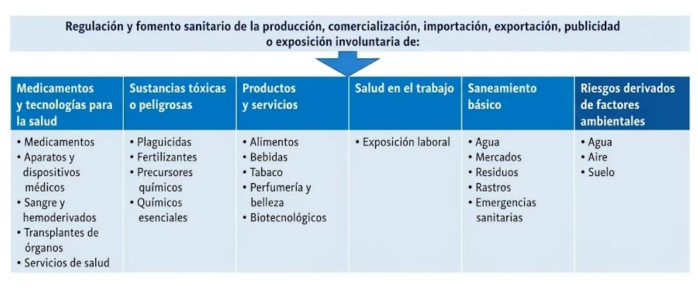

01
Detectar
Identificar posibles efectos adversos y problemas relacionados con la seguridad de los medicamentos.
La farmacovigilancia permite detectar, evaluar, comprender y prevenir los efectos adversos y otros problemas relacionados con la seguridad de los medicamentos y las vacunas.
La seguridad de los medicamentos y las vacunas continúa siendo importante incluso después de su comercialización.
La farmacovigilancia consiste en detectar, evaluar, comprender y prevenir los efectos adversos o cualquier problema de seguridad derivado del uso de medicamentos y vacunas una vez que ya se comercializan.
Identificar posibles efectos adversos y problemas relacionados con la seguridad de los medicamentos.
Analizar la información disponible para valorar los posibles riesgos asociados con su utilización.
Estudiar los efectos identificados para conocer mejor los problemas de seguridad relacionados.
Contribuir a reducir riesgos mediante la identificación y vigilancia de problemas de seguridad.
Consulta la información oficial sobre farmacovigilancia en México.
La farmacovigilancia surgió de la necesidad de identificar riesgos que no siempre podían detectarse durante las pruebas clínicas previas a la comercialización.
Durante el siglo XX, las pruebas clínicas previas no bastaban para prever todos los riesgos asociados con los medicamentos.
Crisis sanitarias como las intoxicaciones por sulfanilamidas en los años treinta y las reacciones severas al practolol evidenciaron la necesidad de vigilar los fármacos en la población general.
La Organización Mundial de la Salud (OMS) fundó el Programa Internacional de Monitoreo de Medicamentos.
Actualmente gestionado por el Centro de Monitoreo de Uppsala, este programa reúne reportes de numerosos países para identificar señales de alerta temprana y contribuir a la protección de los pacientes.
Conoce los acontecimientos que marcaron el desarrollo de la vigilancia de medicamentos en nuestro país.
Comienza el reporte voluntario de reacciones adversas a medicamentos, impulsado inicialmente por la industria farmacéutica.
La Secretaría de Salud formaliza esta actividad como una prioridad sanitaria y crea el Centro Nacional de Farmacovigilancia (CNFV).
México se incorpora oficialmente al programa global de la OMS en 1999.
Tras la creación de la COFEPRIS en 2001, el CNFV pasa a formar parte de su estructura técnica y de manejo de riesgos.
De acuerdo con el material académico, las reformas a la Ley General de Salud publicadas en enero de 2026 impulsan la evolución hacia el Centro Nacional de Farmacovigilancia y Tecnovigilancia (CENAFyT).
El objetivo descrito es integrar y reforzar la supervisión tanto de medicamentos como de dispositivos médicos.
La farmacovigilancia continúa evolucionando para fortalecer la identificación de riesgos y contribuir a la seguridad de los pacientes.
La institución encargada de proteger a la población mexicana frente a diversos riesgos sanitarios.
La COFEPRIS es un órgano administrativo desconcentrado de la Secretaría de Salud, con autonomía técnica, administrativa y operativa.
Fue creada el 5 de julio de 2001 mediante un decreto publicado en el Diario Oficial de la Federación.
Su función es proteger a la población mexicana contra los riesgos sanitarios derivados del uso y consumo de bienes y servicios, los insumos para la salud, la exposición a factores ambientales y laborales, la prestación de servicios de salud y las emergencias sanitarias.
Las atribuciones y funciones de la COFEPRIS se establecen en los artículos 17 bis, 17 bis 1, 17 bis 2, 313 fracción I y 340 de la Ley General de Salud.
La COFEPRIS interviene en distintos ámbitos relacionados con la producción, comercialización, importación, exportación, publicidad y exposición a productos y factores de riesgo.

Desliza horizontalmente la imagen para consultar todas las columnas.
Consulta las regulaciones sanitarias, los procesos de vigilancia y las actividades de farmacovigilancia.
Conoce las disposiciones que regulan la farmacovigilancia en México y los conceptos esenciales para identificar problemas de seguridad.
Instalación y operación de la farmacovigilancia
Establece disposiciones para la operación de la farmacovigilancia en México, incluyendo la identificación, evaluación y notificación de sospechas de reacciones adversas y otros problemas de seguridad.
El material académico hace referencia a la NOM-220-SSA1-2002, una versión anterior sustituida por la NOM-220-SSA1-2016.
La vigilancia de la seguridad de los medicamentos involucra a distintos participantes del sistema sanitario.
El material académico presenta cuatro niveles para explicar las posibles consecuencias de una reacción adversa.
Reacción tolerable que no requiere tratamiento específico.
Afecta las actividades habituales y requiere tratamiento.
Puede comprometer la vida, requerir hospitalización o provocar discapacidad o malformaciones.
La reacción contribuye al fallecimiento del paciente.
Nota: esta clasificación reproduce el enfoque didáctico del material. Para reportes oficiales deben utilizarse las definiciones y criterios de la normativa aplicable.
Es el proceso de identificar síntomas o alteraciones clínicas no deseadas asociadas al uso de un medicamento en dosis habituales.
Su detección permite actuar oportunamente, valorar ajustes, suspensión o sustitución del tratamiento bajo supervisión profesional y prevenir complicaciones.
Además, contribuye a que las autoridades sanitarias identifiquen riesgos nuevos, raros o poco frecuentes.
Porque identificar oportunamente una posible reacción adversa contribuye a proteger la seguridad del paciente y mejorar el conocimiento sobre los medicamentos.
Recepción de notificaciones espontáneas realizadas por profesionales de la salud y pacientes.
Búsqueda intencionada de eventos mediante seguimiento sistemático, registros hospitalarios y estudios.
Revisión de información recopilada para identificar patrones y posibles señales de seguridad.
Selecciona cada concepto para consultar su definición.
La farmacovigilancia contribuye a un uso más seguro de los medicamentos y a la protección de la salud pública.
Consultar COFEPRIS